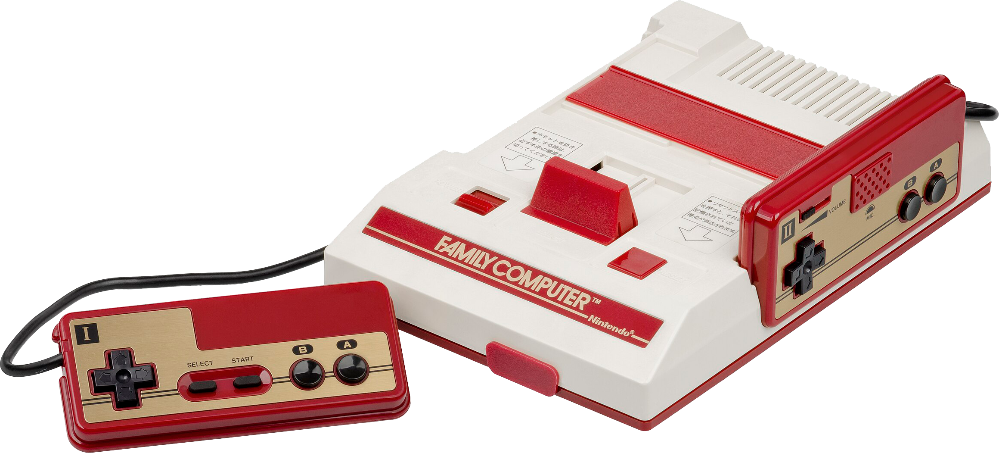

Shigesato Itoi
Shigesato Itoi
Reporter:
When we hear the impressions of players who've finished MOTHER 2, there's been a great
response overall. We check online game forums pretty often, and there's a lot of good
things written.
Itoi:
I'm so glad to hear that. Since the internet is a closed-in area, people can really
run their mouths off, y'know? When MOTHER came out, a lot of people were picking apart
all its faults. I almost thought, well, I'm already a goner to these people — but since
MOTHER 2 was so well-received, I'm satisfied that I've finally gotten across what I
wanted to.
Reporter:
The only thing that was hard was when it would start lagging and everything slowed
down.
Itoi:
Yeah, the over-processing.
Reporter:
But I'm sure that means you absolutely insisted on keeping the rest, even if it
weighed down that aspect of it.
Itoi:
If I hadn't cared so much I wouldn't have been allocating everything with such
horrible balance, with the limitless character counts and eight megabits (out of 24)
of sound alone [laughs].
Reporter:
Your attention to the sound is amazing. How much of a say did you have in it?
Itoi:
It's all because of the people who had far more of a read on it than I ever could.
[Music: Keiichi Suzuki, Hirokazu Tanaka] They basically put it together and told me
okay, here's the intro music. Then the person in charge of the sound was extremely
particular on the text scrolling speed and the length of the pauses put between lines
and such. I started wondering if we were running into programming bugs because he kept
sending stuff back to me. I'd just pause and blurt out, “Sooo……?” [laughs].
Reporter:
That was a first, huh?
Itoi:
I got hounded on for some sound being really outdated or the text windows looking
really shabby! I'd start wondering what the heck he was talking about. If the words
within it weren't interesting, then it'd be pointless.
For example, say there's a tap faucet, and its “water” is video games. People are
going to sell that water in all kinds of ways, with one guy saying it produces
rainbow-colored water, another guy claiming red water, and still another saying it's
mint-flavored. At that point, aren't they basically selling “hardware-in-software”?
But all I want to drink is safe, delicious, plain old water. I mean, it's tap water.
You can drink as much as you want and not get sick of it, and if you're presumably
going to be drinking the next day, too, then it's better off without colors. That's the
kind of approach I had going into it.
But if modern games are pieces of art, then they're quickly evolving into realism. If
looking like a photograph is the standard for what is highly esteemed, then it's no
different from some lady praising a wall calendar from some bank.
Look at Chibi Maruko-chan. She doesn't take that long to draw, but it sells because it's
interesting, right? But if that series came to the Famicom, are people gonna complain the
graphics are too tiny? Yes, they are. [laughs] But when it comes to hopeless poverty like
that, I say live your life only alongside those who are poor. So to all the people who
love the rainbow-colored games they've bought before, well… all I can do is apologize
[laughs].
Reporter:
When I was playing the game and reached the end, I was so upset that it was almost over.
But I suppose there are people who were dissatisfied with MOTHER 2 because it makes you
feel that way.
Itoi:
Well, with that — children, for example, get really excited when you say hey, we're going
out for sushi! But even with sushi, there are yummy ones and bad-tasting ones. Adults
are the ones that are particular about which sushi they eat, but it's hard to get a kid
to see how delicious a sushi is when he's still ecstatic about getting to eat it in the
first place. When they want three pieces instead of five, then all you can say is “Hey!
You can go get your own dang sushi!”. I'm not some kind of merchant. I know I can't bring
myself to sell something just by doing what it takes to please everyone. So I'd just tell
people who want sushi and don't care what it is to go and eat whatever, then. Oh, but — my
sushi might end up just being a little ball of rice. I'm going for simplicity, after
all.
Reporter:
Did you have a drive to make a game that adults can enjoy?
Itoi:
Yeah, of course. I mean, there are less and less adults playing the Final Fantasy
series. Plus, kids who play the Famicom are being called dorks by kids who don't
play the Famicom. Just like kids who like manga are told, “So you go to Comiket,
huh?”. and suddenly aren't popular anymore. So it's kind of my dream for kids who
play the Famicom to become popular.

Reporter:
A Famicom that popular kids play, too?
Itoi:
Yeah, that! I think it's really critical.
Reporter:
It really is getting bad, isn't it?
Itoi:
Like how band members are immediately popular just from being band members.
Reporter:
I see where you're coming from. Some stuffy artist out there will hear the music
from MOTHER 2 and say hey, that's pretty good, and that'll be one way of getting
into the game.
Itoi:
Yeah, like, “Whoa, that's a fretless bass!”. So I want it to be like a game made
by a group of friends who grew up in the same culture. It's not always about finding
records that are awesome for having been pumped out by the production equipment of
[Japanese record company conglomerate] Being, Inc.
Reporter:
But what's interesting is the kids who listen to music like that are the only ones
that aren't even aware of structures like Being.
Itoi:
If so, I'd like them to at least get a taste of the aura of Flipper's Guitar, or
something.
Reporter:
It is about the aura, isn't it? So which parts of MOTHER 2 were you particularly
careful about regarding aura?
Itoi:
I'd say… all of it. The story, but the script was the main focus. I've got characters
with a vivid reality to them, but the script lines that didn't seem very realistic
were very frustrating.
Reporter:
There are a lot of tricks in the script and other areas that are borderline breaking
the unwritten “standards” of games.
Itoi:
That's not true — I'm following the rules [laughs].
Reporter:
Well, on top of having kept the standards, then.
Itoi:
Yeah… for example, the adults in MOTHER 2 tell lies. Telling a lie in a game means that
the functionality of direction leading a player through the game becomes increasingly
unreliable. Even though everything would be fine if they'd just said “go that way”,
saying something like, “If… if you go that way… you won't like it”, puts the game
functionality in a tough spot. But realistically speaking, we're surrounded every day
of our lives by people who aren't entirely honest or straightforward. That means it'd
only make sense for someone like that to show up in a game — I see it as a given. The
people who say it “fits” are the ones that get it.

Reporter:
Going back to the script, there are quite a few lines that make the player acutely
aware of their world outside the game. Was that intentional?
Itoi:
It was intentional. There's no way I could express every little thing in a game.
Its world isn't exactly one of actual realism, so I'm barely able to maintain that
intention along with the standards of what is “just a game”. If you don't let out
some of the hot air once in a while, it's going to become really obvious how
suspicious it is. Then people will really say, well, it's just a game.
Reporter:
MOTHER 2 is generally about “fated heroes”. Thanks to that, the gap between fantasy
and reality is filled in strategically enough to quell any suspicions.
Itoi:
I don't think there was any other way to do it.
Reporter:
I had a feeling the cameraman was sort of serving that same purpose.
Itoi:
Well, someone else had come up with new logic that made it an entirely natural
occurrence. I was really impressed by that [laughs].
Reporter:
Like you can't bring yourself to accept a “meta” world [laughs].
Itoi:
Yeah, it's not meta. I didn't know what it would take to let that cameraman be
a part of that world. It's actually more childish to do it that way; it's more
pleasant to just leave it as meta.
Reporter:
So it's the thought that you can't accept?
Itoi:
I guess.
Reporter:
Final Fantasy is a world that flatly refuses this meta perspective, but even so,
everyone's fine with it because it parallels with another time. Were there any
reservations in using this same tactic with MOTHER 2?
Itoi:
That's like having to choose whether it's more fun to be required to follow a
certain rhythm and chase things in order, or pull everything together all at once
and carry it onward to wherever feels right.
Reporter:
It's clear that you at least kept things short.
Itoi:
I wanted to. I think there were more techniques I could have chosen from, though.
We were five years late, but if it'd taken ten years, then there would have been
even more to it. For example, if we could watch the things we'd done on a TV in a
hotel room, that'd be fascinating. If we had an unlimited supply of time and manpower,
we'd want to. But what I'd really like to try is something I was happy that [Satoshi]
Tajiri mentioned: “When I reached my first battle scene I finally remembered that this
was an RPG I'm playing”. Which means both the tone of the scenes and the controls are
that of an action game.
Reporter:
Oh, I get it. The controls are pretty similar.
Itoi:
Yeah. And I think it'd be most interesting if it could all pass as that. After all,
action games are really luxurious; they don't have set standards. So a great deal
of MOTHER 2's framework is based on how fun I think it would be if Super Mario could
turn into an RPG with the graphics as-is.
Reporter:
And it's that desire that resulted in the game's battle-entry method.
Itoi:
If it's a really slow enemy, you can just run away. That part of the game-play is
an action game. Whether that can be applied to the whole thing, well… RPGs aren't
fun when the player with the best manipulation of the controller wins… there's still
a lot to figure out.
But we're still talking about games in the context of what we know as “games”, so I
think we need to take a closer look at it; if we remove the quirks and essences and
things that make it a “game”, stripped bare it is just programming within a ROM to be
played. It might be a bit of an adventure to get to that point, but if its visitor
hasn't abandoned it yet, then the world inside that ROM will only get more interesting.
In America the Famicom is called “Nintendo Entertainment System”, right? It doesn't
say one word about games. I'd like to apply that logic.
Reporter:
I don't quite get exactly what that would entail, but do you mean it would be
interactive in a way?
Itoi:
Yes.
Reporter:
I figured.
Itoi:
Miyamoto-san always hated RPGs, you know. He'd question whether battle scenes were
really all that necessary. “Why can't they just do rock paper scissors?” So I told
him that without it, the game would be over in the blink of an eye. It'd be really
passive, and without battles there would be no stress. There'd be no feeling of
accomplishment when moving forward.
Reporter:
So that's what that “essence” of the game is.
Itoi:
And to make it feel more firsthand, I put in the rolling HP meter, involved chase
scenes with monsters before entering battles, things like that. Even then, he
questioned whether battles were necessary.
Reporter:
That's because he was sick of the battles, and the first Dragon Quest had battles as
a major part of the game.
Itoi:
If you go to a beer factory, there's beer that's still not ready, called “young beer”.
The alcohol content is low and it smells really strongly of barley. Everyone says it's
really good if you drink it cold, and marvels at how it's the starting point of a good
beer. [laughs] They just rant and rave about it. But if you turned that young beer
into a product and sold it, there's no way it would actually sell. [laughs] You can't
drink as much orange juice as you can beer, right? That's the downfall of young beer,
which is basically barley juice.
To make a long story short, I don't think I'd play a finished ROM without battles if
I knew the rest of the story and all that benefits it. But if you tell me to make one
that you'll play, I'll do my best! That's my goal! So it's a question of what stressor
could replace that of the battles.
Reporter:
Also, the feeling that time has passed from the beginning of the game to the end is
because of the battles up until that point.
Itoi:
Right? I've been thinking about that. It's a part of MOTHER 2. Not just extending
play time, but accentuating how important every moment is. When you put the Zombie
Paper in the tent, you've got to spend a night, right? It takes time for it to work,
and I'm not talking just a few moments. It needs to go through a process. It was my
dream for people to see that as enjoyable. I don't think it's impossible for games
to have a sense of speed come across through methods like that. So I'll do my best
to master that. I'll focus really hard on pulling it off well in 3.